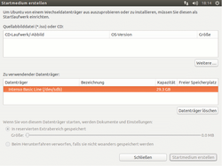

Live-USB
Dieser Artikel wurde für die folgenden Ubuntu-Versionen getestet:
Ubuntu 16.04 Xenial Xerus
Ubuntu 14.04 Trusty Tahr
Zum Verständnis dieses Artikels sind folgende Seiten hilfreich:
 Dieser Artikel beschreibt, wie man eine Ubuntu-Desktop-CD bzw. -DVD auf einen USB-Stick kopiert, um den USB-Stick als Ersatz für ein optisches Laufwerk zu verwenden. Dies ist erforderlich, wenn der Computer über kein optisches Laufwerk verfügt oder die Ubuntu-Desktop-CD nicht erkannt wird, man also eine alternative Möglichkeit braucht, um Ubuntu zu installieren. Auf diese Art und Weise kann man auch gleich auf ein zweites externes Speichermedium installieren (siehe Installation auf externen Speichermedien).
Dieser Artikel beschreibt, wie man eine Ubuntu-Desktop-CD bzw. -DVD auf einen USB-Stick kopiert, um den USB-Stick als Ersatz für ein optisches Laufwerk zu verwenden. Dies ist erforderlich, wenn der Computer über kein optisches Laufwerk verfügt oder die Ubuntu-Desktop-CD nicht erkannt wird, man also eine alternative Möglichkeit braucht, um Ubuntu zu installieren. Auf diese Art und Weise kann man auch gleich auf ein zweites externes Speichermedium installieren (siehe Installation auf externen Speichermedien).
Aktuelle ISO-Images können einfach mit dem Befehl dd übertragen werden können. Unter Windows kann man eines der folgenden Programme verwenden: Linux Live USB Creator  (LiLi), Rufus
(LiLi), Rufus  oder Win32 Disk Imager .
oder Win32 Disk Imager .
Grundlagen¶
Damit das Booten vom USB-Stick funktioniert, muss das BIOS des Computers die Funktion "Boot from USB" unterstützen. Gegebenenfalls muss man diese Option vorher im BIOS aktivieren und die Boot-Reihenfolge ändern. Der Stick muss natürlich ausreichend groß sein, also mindestens 950 MiB haben.
Bei neueren Rechnern, die EFI statt BIOS verwenden, ist ein anderes Vorgehen notwendig, welches im Artikel EFI USB-Stick beschrieben ist.
Wenn der Computer trotz angeschlossenem USB-Stick wie gewohnt von Festplatte startet, ist er nicht für den Start von USB eingerichtet. Diese Einstellung wird im BIOS vorgenommen. Die genaue Vorgehensweise verrät die dem Computer oder Mainboard beiliegende Anleitung. In manchen Fällen kann man allerdings durch Drücken von Esc , F8 , F11 oder F12 (variiert nach BIOS-Hersteller) gleich nach dem Einschalten des Gerätes ein Boot-Device-Menu aufrufen, von welchem USB-Festplatten oder -Sticks gestartet werden können. Dies ist manchmal die einzige Möglichkeit, von USB zu starten.
Bei älterer Hardware ist auch das oft nicht möglich. Dann hilft evtl. noch der Plop Boot Manager , welcher das (Zitat)
"USB booten ohne BIOS-Unterstützung (UHCI, OHCI und EHCI)"
ermöglicht.
An einem neueren PC mit USB 3.0 sollte darauf geachtet werden, dass ein USB-2.0-Stick an einem USB-2.0-Anschluss angeschlossen wird und nicht etwa an einem neueren USB-3.0-Anschluss. Generell ist USB 2.0 zu bevorzugen, da es bei USB 3.0 zu diffizilen Problemen kommen kann.
USB-Creator/Startmedienersteller¶
Mit dem Startmedienersteller (Paketname und englische Bezeichnung USB-Creator) kann man auch einen USB-Datenträger statt einer Desktop-CD als Installations- bzw. Testmedium nutzen.
Hinweis:
Unter Windows bitte den Linux Live USB Creator (LiLi) verwenden.
Installation¶
Das dafür benötigte Programm ist unter Umständen bereits in einer Standardinstallation enthalten. Nachinstalliert [1] werden kann das Programm mit den Paketen:
 mit apturl
mit apturl
Paketliste zum Kopieren:
sudo apt-get install usb-creator-gtk
sudo aptitude install usb-creator-gtk
oder
usb-creator-kde (für KDE)
mit apturl
Paketliste zum Kopieren:
sudo apt-get install usb-creator-kde
sudo aptitude install usb-creator-kde
Benutzung¶
|  |
| USB Creator |
Der USB-Stick sollte bereits eine mindestens 750 MiB große FAT32-Partition enthalten (ab Ubuntu 14.04 Tahr 950 MiB). Wenn zusätzlich Daten gespeichert werden sollen (siehe unten), ist eine zweite Partition erforderlich. Zur Einrichtung kann man beispielsweise die Laufwerksverwaltung oder GParted verwenden.
Das Programm kann man bei
Unity und GNOME 3: über die Eingabe
gksudo usb-creator-gtkKDE: "Programme -> System -> Startup Disk-Creator"
Xfce: "Einstellungen -> Startmedienersteller"
LXDE: "Systemwerkzeuge -> Startmedienersteller"
starten [2], allerdings werden Root-Rechte benötigt [8]. Ist das Programm gestartet, hat man nun die Wahl, das Quellmedium anzugeben. Entweder man nutzt eine eingelegte Ubuntu-Desktop-CD oder man nutzt eine Ubuntu-Desktop-ISO-Datei (z.B. von hier  ). Letztere wird über die Schaltfläche "Weitere..." eingehängt. Im mittleren Programmfensterbereich werden alle angeschlossenen und erkannten USB-Sticks angezeigt. Hier wählt man den gewünschten USB-Stick aus.
). Letztere wird über die Schaltfläche "Weitere..." eingehängt. Im mittleren Programmfensterbereich werden alle angeschlossenen und erkannten USB-Sticks angezeigt. Hier wählt man den gewünschten USB-Stick aus.
Hinweis:
Die Option zur Datenspeicherung "In reservierten Extrabereich" steht nur zur Verfügung, wenn mindestens zwei Partitionen vorhanden sind.
Im unteren Bereich des Programms kann man noch abschließend einstellen, ob man Dokumente und Einstellungen dauerhaft auf dem USB-Stick abspeichern möchte ("In reservierten Extrabereich"). Das hat den Vorteil, dass diese bei jedem Start erhalten bleiben. Möchte man das nicht, wählt man die Option "Beim Herunterfahren verwerfen, falls sie nicht woanders gespeichert wurden".
Mit der Schaltfläche "Startmedium erstellen" wird nun der USB-Stick vorbereitet. Ist der Vorgang abgeschlossen, wählt man "Beenden".
Daten speichern¶
Man kann, hat man die Ubuntuversion auf den USB-Stick gespielt, diesem Dateien hinzufügen, welche man dann direkt aus der Live-Version heraus benutzen kann, ohne andere USB-Sticks einbinden zu müssen. Dazu kopiert man die Dateien direkt in die oberste Ebene des USB-Sticks. Hat man dann von diesem gebootet, liegen die zuvor gespeicherten Daten im Ordner /cdrom von wo aus man sie benutzen kann.
Probleme¶
Falls kein startfähiger USB-Stick erstellt werden kann, kann das an der verwendeten Programmversion von usb-creator bzw. dem Startmedienersteller liegen. Oft hilft es auch, den zu verwendenden USB-Stick komplett neu mit FAT32 zu formatieren. Das kann beispielsweise grafisch mit der Laufwerksverwaltung erfolgen.
Live-USB-Stick mit der Laufwerksverwaltung¶
Eine weitere Möglichkeit, ein Live-System auf einem USB-Stick zu erzeugen, ist das Programm Laufwerksverwaltung, das in der Regel schon vorinstalliert ist. Eine Anleitung, die diese Methode Schritt für Schritt erklärt, ist im genannten Artikel unter Laufwerksabbild wiederherstellen beschrieben.
Live-USB-Stick mit UNetbootin¶
Eine weitere einfache Möglichkeit, einen Installations-USB-Stick zu erzeugen, ist das Programm UNetbootin. Hat man dieses Programm installiert und gestartet, muss man noch das Betriebssystem, welches man gerne vom USB-Stick booten möchte, auswählen. Dann noch den USB-Stick auswählen, von dem man booten möchte, den Rest macht das Programm. Allerdings ist unter UNetbootin das normale Startmenü wie auf der Live-CD nicht erreichbar - die verwendete ISO startet mit den Voreinstellungen (englische Tastenbelegung, englische Desktop-Umgebung).
Multiboot-Stick mit MultiSystem¶
Soll sich auf dem Stick mehr als eine bootbare Distribution befinden, so bietet sich eine Einrichtung mit dem Programm MultiSystem an. Bereits heruntergeladene Abbilddateien (z.B. .iso) können über die Programmoberfläche per Drag&Drop einfach hinzugefügt werden. Das Programm unterstützt dabei über 200 Systeme, die automatisch eingerichtet werden können.
Manuelle Erstellung mittels dd¶
Falls alle Stricke reißen, kann das heruntergeladene Hybrid-ISO-Image ohne weitere Aufwände mittels dd (Disk Doubler - Bitweises Kopieren von Dateisystemen; auch für Windows erhältlich: dd for windows ) auf den Stick gespielt werden. Dieser Weg kann notwendig sein, wenn andere als Debian- oder Ubuntu-Images auf den Stick kopiert werden sollen.
Problembehebung¶
Partition number could not be detected¶
Diese Meldung gibt der USB-Creator oder USB-Startmedien-Ersteller aus. Die Partitionierung des USB-Sticks wurde nicht erfolgreich erkannt oder ist fehlerhaft. Dies kann z.B. bei noch nie verwendeten Sticks vorkommen. Hier hilft oft ein Neupartitionieren [7].
isoinfo: Unable to find Joliet SVD¶
Diese Meldung wird vom USB-Creator ausgegeben (bzw. in der grafischen Oberfläche wird das angewählte ISO-Image nicht angenommen/angezeigt). In dem Fall sollte der Live-USB-Stick mit der manuellen Methode via dd erstellt werden.
Operating System not found¶
Bei dieser Fehlermeldung beim Startversuch ist die Lösung recht trivial. Der USB-Stick wurde noch nicht als bootbar markiert, d.h. das Boot-Flag wurde nicht gesetzt [7].
Andernfalls liegt es daran, dass die Partition als Festplatte und nicht als Floppydisk partitioniert ist. Dies kann man erreichen, indem man die Partition auf dem Stick von /dev/sdX1 über den Umweg der lokalen Festplatte nach /dev/sdX verschiebt (genügend freien Festplattenplatz vorausgesetzt). Dazu folgende Befehle anpassen und ausführen:
sudo dd if=/dev/sdX1 of=~/usb-stick.img bs=1M sudo dd of=/dev/sdX if=~/usb-stick.img bs=1M sudo rm ~/usb-stick.img
Defekter Startsektor¶
Es kommt vor, dass ein defekter oder falscher Bootsektor installiert bzw. noch gar keiner vorhanden ist. Dies tritt z.B. auf, wenn ein veränderter U3-Stick verwendet wird. Das folgende Paket wird benötigt:
mbr
mit apturl
Paketliste zum Kopieren:
sudo apt-get install mbr
sudo aptitude install mbr
Nun in einem Terminal-Fenster den folgenden Befehl ausführen (X bitte anpassen!):
install-mbr /dev/sdX
Wenn keine Fehlermeldung ausgegeben wurde, ist der neue Bootsektor jetzt installiert und es kann erneut versucht werden, vom Gerät zu starten.
Stick wird beim Booten nicht erkannt¶
In vielen BIOS-Versionen gibt es die Option "USB Legacy Support". Diese sollte eingeschaltet werden, denn damit nutzt das BIOS einen eigenen Treiber für USB-Geräte. Sonst sind die USB-Sticks unsichtbar, sofern nicht das Betriebssystem einen eigenen USB-Treiber mitbringt.
Bootvorgang stoppt¶
Sollte beim Start vom Stick die Fehlermeldung
"unable to find a medium containing a live file system"
auftauchen, hilft trivialerweise manchmal das Umstecken des USB 2.0-Sticks von einem USB-3.0-Anschluss an einen USB 2.0-Anschluss.
Wenn Ubuntu während des Hochfahrens stehen bleibt und ein blinkender Cursor erscheint, muss mit Strg + Alt + F1 in den Textmodus gewechselt werden. Dort sollte zumindest eine "Loading ..."-Meldung oben stehen, doch der Rest scheint eingefroren. Nach dem Betätigen der ⏎ -Taste müsste Ubuntu nun starten.
Probleme beim Boot von FAT32-Sticks¶
Sollte es beim Booten vom USB-Stick zu einer der folgenden Fehlermeldung kommen:
"no default or ui configuration directive found"
"Error: No configuration file found"
"Could not find kernel image: linux"
können zwei Lösungsstrategien angewandt werden:
Bei älteren Rechnern (z.B. Compaq Evo d510e) kann es sein, dass der Rechner bzw. das Betriebssystem beim Booten nicht mit dem neueren FAT32-Dateisystem auf dem USB-Stick zurecht kommt.
Lösung: Den Stick auf FAT16 umformatieren (z.B. in Windows im Dateiexplorer mit rechter Maustaste auf das Sticksymbol klicken, und als Format den Eintrag vor FAT32, "MS DOS" genannt, auswählen). Dann mit diesem Stick den bootfähigen Stick erstellen.
Eine andere Ursache kann darin liegen, dass für den Bootvorgang benötigte Dateien wegen unpassender Benennungen nicht gefunden werden.
Lösung: Folgende Umbenennungen durchführen: den Ordner isolinux in syslinux, die darin enthaltenen Dateien isolinux.bin in syslinux.bin und isolinux.cfg in syslinux.cfg
unknown keyword in configuration file¶
Stoppt der Bootvorgang mit obiger Fehlermeldung, entfernt man mit einem Texteditor aus der Datei /syslinux/syslinux.cfg das Wort ui aus der letzten Zeile und bootet erneut.
gfxboot.c32: not a COM32R image¶
Die Ursache der Fehlermeldung ist eine Änderung in der Datei syslinux seit Ubuntu 14.04. Daher tritt der Fehler auf, wenn man mit dem USB-Creator vor Ubuntu 14.04 einen Ubuntu-USB-Stick erstellt. Um trotzdem booten zu können "live" eingeben und mit ENTER bestätigen. (Wenn man anstatt der Eingabe die TAB Taste drückt, bekommt man ein Auswahlmenü angezeigt.) Will man das Problem auf einem USB-Stick dauerhaft beheben, hilft folgendes Vorgehen:
vom Live-USB-Stick booten
Terminal öffnen (z.B. mit Ctrl+Alt+t)
sudo -i apt-get update apt-get install syslinux mount | grep cdrom
mit dem letzten Befehl erhält man Angaben, von welchem DEVICE der USB-Stick gebootet wurde
im folgenden Befehl im Terminal das "X" im Device /dev/sdX1 durch das gerade ermittelte Device ersetzen:
syslinux /dev/sdX1 reboot
Links¶
Installation from USB-Stick
- Ubuntu Community-WikiPendrivelinux.com
- Rund um das Thema „Linux auf dem USB-Stick“ (Anleitungen, Programme, Tipps)Laufwerksverwaltung - USB-Livesystem mit der Laufwerkverwaltung erstellen
- Erstellt mit Inyoka
-
 2004 – 2017 ubuntuusers.de • Einige Rechte vorbehalten
2004 – 2017 ubuntuusers.de • Einige Rechte vorbehalten
Lizenz • Kontakt • Datenschutz • Impressum • Serverstatus -
Serverhousing gespendet von